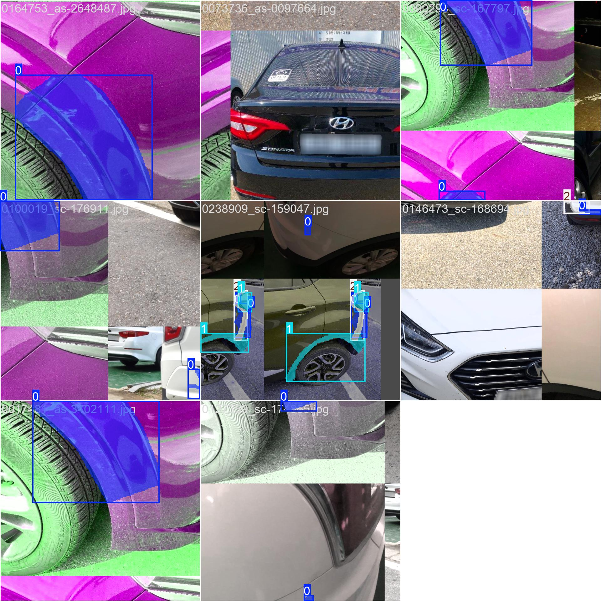
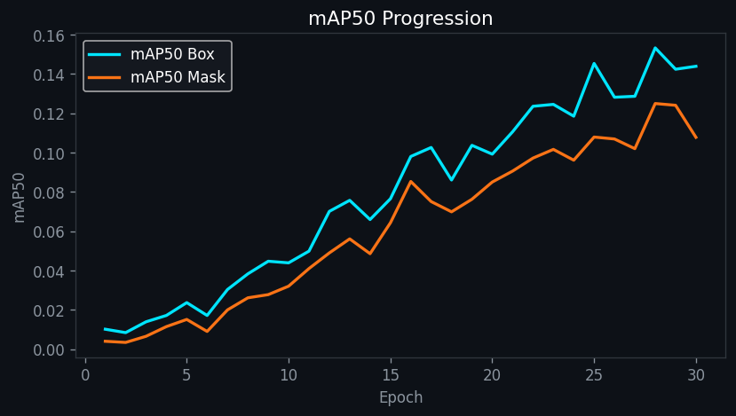
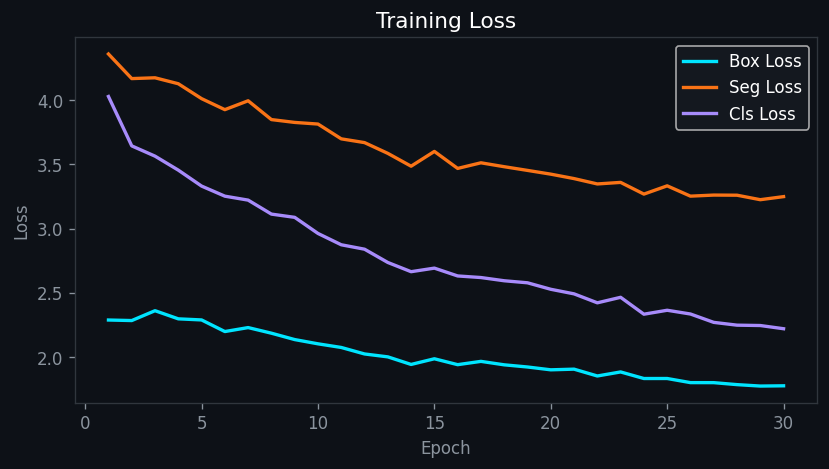

개요

YOLOv8n-seg 학습에 사용한 차량 손상 데이터셋 샘플
사고 차량 사진을 올리면 YOLOv8n-seg 커스텀 모델이 손상 부위·유형을 픽셀 단위로 감지합니다. 과거 수리 사례 DB로 예상 수리비를 추정한 뒤, 국내 자동차보험 할증 규정과 비교해 보험처리 vs 자비처리 중 어느 쪽이 유리한지 계산합니다. RAG 기반 LLM 챗봇이 근거를 붙여 결과를 설명해줍니다.
데이터 수집·전처리부터 YOLOv8 파인튜닝, RAG·LLM 상담 로직, Streamlit 앱까지 전 과정을 혼자 설계·구현했습니다.
모델 학습 성능


핵심 기능
🔍 손상 탐지
긁힘·파손·분리·찌그러짐 4종 손상을 10개 부위 기준으로 픽셀 세그멘테이션
💰 수리비 추정
손상 유형별 실제 공임 데이터(SQLite)와 매칭해 항목별 예상 수리비 산출
📊 보험 손익 계산
할증 기준(1~3년, 10~15%)을 반영해 보험처리 vs 자비처리 중 유리한 쪽 추천
💬 LLM 상담
Groq 다중 모델 fallback + Gemini 비상 fallback으로 안정적 응답, RAG 검색 근거 첨부
기술 스택
| 영역 | 사용 기술 |
|---|---|
| 프론트/앱 | Streamlit |
| 비전 모델 | Ultralytics YOLOv8n-seg · OpenCV(headless) · Pillow |
| LLM | Groq API(Llama 3.3 70B 등 순차 fallback) · Gemini 2.5 Flash(비상 fallback) |
| RAG | LangChain · ChromaDB · Sentence-Transformers(다국어 임베딩) |
| 데이터 | SQLite(수리비 공임 DB) · pandas · numpy |
| 모델 배포 | Hugging Face Hub(가중치 자동 다운로드) |
트러블슈팅
| 문제 | 원인 | 해결 |
|---|---|---|
| LLM 응답이 간헐적으로 실패 | Groq의 무료 모델이 예고 없이 decommissioned 처리되어 특정 모델 호출이 죽는 경우 발생 |
모델명을 하드코딩하지 않고 llama-3.3-70b-versatile → llama-3.1-8b-instant → llama3-8b-8192 → mixtral-8x7b-32768 순으로 순차 재시도하고, 에러 메시지에 decommissioned/model_not_found가 포함될 때만 다음 모델로 넘어가도록 분기. 전 모델 실패 시 Gemini로 비상 전환 |
| LLM이 완전히 응답 불가한 순간에도 서비스가 죽음 | 외부 API 의존이라 완전 장애 가능성 존재 | Groq·Gemini 모두 실패하면 손상 분석·수리비·보험 손익 데이터를 규칙 기반 마크다운 템플릿으로 즉시 조합해 응답(_fallback_report) |